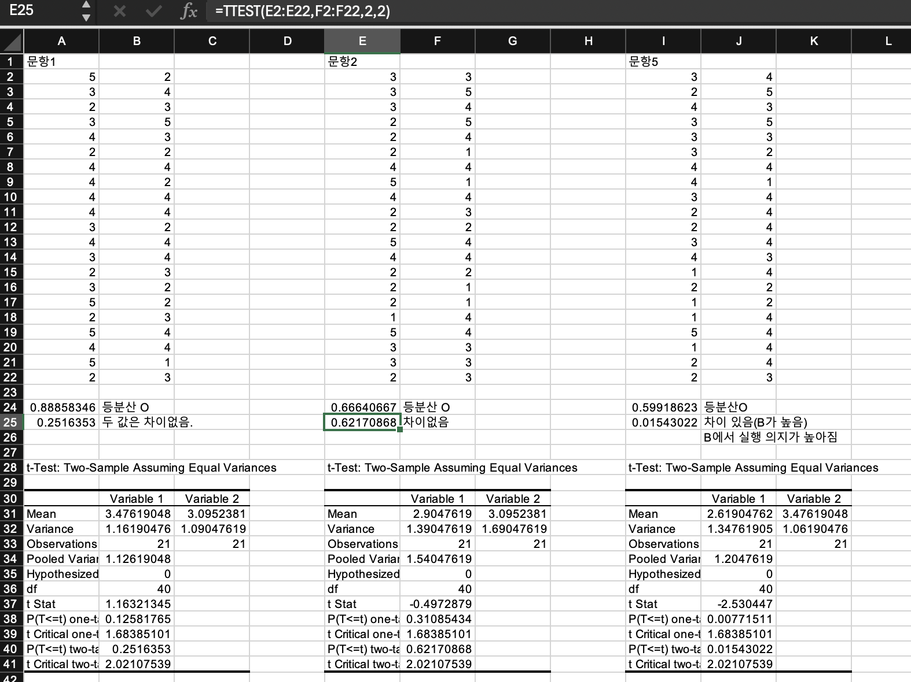
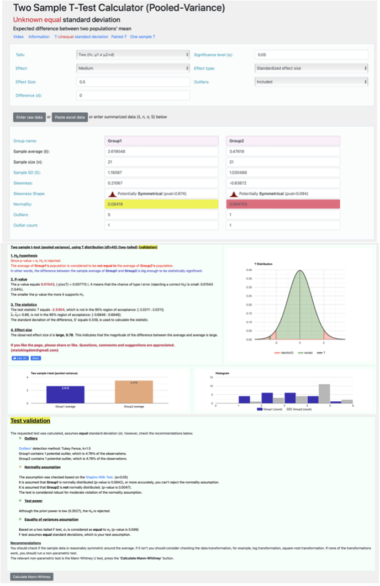

ch2. F-test와 T-test의 실습 방법들
앞 장에서는 가설 검정의 개념과 R 코드를 사용한 예제들을 학습했지만, F-테스트나 T-테스트의 수행 방법은 다양합니다. 오피스 문서 도구인 구글 스프레드 시트나 엑셀 함수를 사용하여 매우 간단하게 결과를 얻을 수 있고, 통계계산기, 또는 AI 서비스를 통해서도 값을 얻고, 결과 해석에 대한 도움도 받을 수 있습니다. 앞으로 업무 환경에 맞게 다른 방법들을 사용할 수 있으니 여러가지 검정 방법들을 살펴보겠습니다.
구글 스프레드 시트를 사용한 가설 검정 (F-test, T-test)
아래의 링크를 보면 구글 스프레드 시트와 엑셀에서 사용할 수 있는 FTEST, TTEST 함수에 관한 설명이 나와있습니다. 앞 장에서 함수 이해에 필요한 개념들을 학습했으므로 설명이 잘 이해될 것입니다. 함수의 사용 방법은 설명에 나와 있듯이 아주 쉽습니다. 답을 넣고 싶은 셀에서 상단 리본 메뉴의 함수>통계>FTEST/ TTEST를 선택하고, 적용할 데이터 범위와 옵션을 지정해 주면 검정에 필요한 p-value 값을 바로 출력해줍니다. 데이터량이 많고, 데이터 편집이 필요할 때는 R과 같이 프로그래밍적인 방법이 좋지만, 데이터량이 적은 경우에는 오피스 도구로 충분히 원하는 검정 결과를 얻을 수 있습니다. (29)(30)
엑셀의 분석도구팩을 사용한 가설 검정 (F-test, T-test)
이번에는 엑셀에서 제공하는 분석도구팩을 사용하여 좀 더 풍부한 해설 값을 출력해보겠습니다. 우선 엑셀 분석도구팩을 설치해야합니다. 사용 컴퓨터가 윈도우 PC인 경우 엑셀 상단 리본메뉴의 파일 >옵션 >추가기능 >이동 > 분석도구팩을 선택하여 설치합니다. 사용 컴퓨터가 맥 PC인 경우 엑셀 리본메뉴의 데이터 >분석도구 >분석도구팩을 선택하여 설치합니다.
분석 도구팩 설치 후, 상단 리본메뉴 데이터>데이터 분석> T검정/ F 검정 옵션선택 > 범위 설정 > 기타 출력 옵션 설정을 하면 아래 그림의 하단 표와 같이 정리된 표 형태로 검정 테스트 관련 값들이 출력됩니다.
[그림 28]은 수업에서 사용한 연습 데이터로 3개 설문 문항에 대하여 각 문항의 A디자인(우), B디자인(좌)에 대한 사용자 응답 결과를 대응하여 입력하였고, 각 문항 별로 등분산 여부(FTEST)와 두 값의 차이 여부(TTEST)를 24, 25행에 출력한 사례입니다. 그리고 그림에서 상단 입력 내용 창에는 문항 2에 대하여 엑셀 함수 메뉴를 사용한 E25셀의 TTEST엑셀 함수 옵션을 보여줍니다. 그리고 28행 부터는 엑셀의 분석도구팩을 사용하여 TTEST 분석 내용을 표로 출력하였습니다.
결과 내용을 보면 3개 문항 모두 FTEST에서 p-value가 0.05보다 크므로 두 그룹의 분산 차이가 없다는 등분산 만족 결과를 보여주고, 있고, TTEST에서 문항 1, 2는 p-value가 0.05보다 커서 두 그룹의 차이가 없다. 즉 결과가 개선되지 않았음을 알 수 있고, 문항 5는 p-value가 0.05보다 작아서 두 값의 차이가 있다. 즉, 디자인 B의 응답 값이 더 높다, 개선되었다는 판단을 할 수 있습니다. 1번 문항의 경우 31행의 평균값(Mean)을 보면 A디자인의 값이 더 높습니다. 하지만 T검정 값은 통계적으로 판단할 때 두 값이 차이가 없다고 판단합니다. 문항 2의 경우 B디자인의 평균값이 조금 더 높지만 이것은 T검정 값으로 볼 때 통계적 의미가 없는 차이여서 두 값의 차이가 없다고 판단했습니다. 이렇게 각 그룹의 평균값이 차이가 난다는 것만으로는 어떤 그룹의 값이 더 높거나 낮다고 판단할 수는 없다는 것을 알 수 있습니다.

여기까지 수업을 하고나면, 어려워 보이던 F검정, T검정의 방법이 너무 간단해서 놀라고, 당연히 KPI가 개선 될 것으로 확신했던 개선 디자인 B의 값이 A디자인과 차이가 없다는 결과가 많이 나와서 다시 한 번 놀랍니다. 통계적 검정의 결과는 매우 보수적인 편입니다. 정말 확실한 차이가 있어야 두 그룹이 차이가 있다고 판정합니다. 이에 대한 자세한 대응 방법은 다음 단원의 실습 과제에서 더 공부하도록 하겠습니다.
통계 계산기: T-Test Calculator를 사용한 가설 검정
아래 [그림 29]는 [그림 28]의 5번 문항 데이터를 T-Test Calculator 서비스에 넣어서 데이터 분석과 해석을 출력한 사례입니다. 이것은 웹기반의 통계 계산 서비스를 활용한 것으로, GUI메뉴로 데이터를 입력하면, 해당 통계 계산을 해서 출력과 자세한 데이터 분석을 제공합니다. 현재 테스트 화면에서는 두 데이터의 정규성에 문제가 있는 것으로 진단 되었습니다. 우리 테스트의 데이터 갯수가 적기 때문에 정규성 만족 문제가 발생했고, 이 문제를 해결하기 위해 다른 방법(Calculate Mann-Whitney)으로 분석해 볼 것을 권장하고 있습니다. 또한 데이터의 분석 내용을 그래프로 정리하여 이해하기 쉽게 해설해주고 있습니다.(31) 이렇게 통계 계산기 웹서비스를 사용하면 데이터 분석 인사이트에 대한 풍부한 해설과 추천 의견을 받아 문제 해결을 할 수 있습니다. 다만 해설에서 다루는 용어와 정의에 대한 이해 역량이 필요합니다. 어려운 해설 부분도 인공지능 서비스의 도움을 받으면 되니까 크게 걱정하지는 않아도 됩니다.

참고로, 정규성을 불만족한 경우 (관측값이 30개가 안되는 경우)는 T-test가 부적합하므로 아래의 정규성 검정 테스트를 해보고, 샘플이 정규분포가 아니거나 수가 적을 때, 모수에 대한 가정을 전제로 하지 않고 모집단의 형태에 관계없이 주어진 데이터에서 직접 확률을 계산하는 Mann-Whitney U test 를 사용합니다.
정규성 검정 (Shapiro-Wilk test)(32) Shapiro-Wilk test calculator: normality calculator, Q-Q plot
비모수 검정(Mann-Whitney U test)(33) Mann-Whitney U test
사용자 로그 데이터로 T-test 하기: e-commerce business A/B test case study
데이터 과학 관련 유투버인 Emma Ding은 온라인 서비스의 A/B 테스팅 사례를 아래 제시한 영상으로 설명하였습니다. (34) 영상 내용은 온라인 쇼핑몰 운영하는 A기업이 고객 경험을 향상시키고 매출도 올리고 싶어서 여러 전략을 고민하던 중, ‘결제 페이지에 유사 상품 보여주는 기능’ 도입하면 구매 품목 늘릴 수 있을 것 같다는 아이디어를 냈으나, 이 아이디어가 오히려 결제에 집중 못 하게 해서 구매 포기하게 만들 수도 있지 않을까 하는 걱정도 있어서 ’결제 페이지에 유사 상품 보여주는 기능’의 도입 여부를 결정하고자 A/B 테스트를 진행하는 과정을 설명합니다.
실험 목표: 유사 상품 기능이 고객 구매에 얼마나 영향 주는지, 수익 증대 효과 있는지를 분석합니다.
KPI: 사용자당 평균 구매 금액 (ARPU:Average Revenue Per User)가 2$ 이상 증가한다.
실험군:
- 대조군: 기존 결제 페이지 그대로 유지 (A 디자인)
- 처리군 1: 결제 페이지 아래에 유사 상품 섹션 추가 (B 디자인)
- 처리군 2: 결제 페이지 중앙에 유사 상품 팝업 창 띄움 (B’ 디자인)
표본:
- 결제 페이지 들어오는 모든 고객들을 각 그룹에 랜덤하게 배정해서 실험 결과 객관적으로 나오도록 함.
- 통계적으로 의미 있는 결과 얻으려면 각 그룹에 충분한 수의 사람들이 있어야 함.
- 사례는 그룹당(대조군, 처리군1, 처리군2) 1,600명씩 총 4,800명 조사, 일 단위로 조사 인원 비율을 점차 늘려 조사함.
실험 기간: 요일별로 차이가 있을 수 있으니까 최소 일주일 이상 진행
데이터 분석 및 결과 해석
- 처리군 1 (유사 상품 섹션, B디자인): 기존이랑 비교하여 ARPU는 실질적인 증가가 있었지만, 통계적으로 유의미한 차이는 없었음.
- 처리군 2 (유사 상품 팝업 창, B’디자인): ARPU는 실질적 증가가 있었고, 통계적으로도 유의미하게 증가했지만, 팝업 창에 대한 고객 선호도는 고려해야함.
결론 및 후속 조치
이번 A/B 테스트 결과를 바탕으로 A기업은 다음의 후속 조치를 취하기로 함.
- 처리군 1 (유사 상품 섹션): 유사 상품 추천하는 알고리즘 개선하고 디자인을 바꿔서 사용자 경험 좋게 만들고 다시 A/B 테스트 해보기로 함
- 처리군 2 (유사 상품 팝업 창): 팝업 창 디자인을 개선해서 불편한 점을 줄이고 구매 단가를 높이는 방법 찾아보기로 함
이와같이 A/B 테스트는 한 번 하고 끝나는 게 아니라, 평가 결과를 바탕으로 반복적으로 개선하고 검증하면서 최적화된 결과 만들어나가는 데 활용할 수 있습니다.
(문헌 29) 구글Docs 편집기 고객센터, “FTEST”, https://support.google.com/docs/answer/7004183?hl=ko&ref_topic=3105600
(문헌 30) 구글Docs 편집기 고객센터, “TTEST”, https://support.google.com/docs/answer/6055837?hl=ko
(문헌 31) Statistics Kingdom, “Two Sample T-Test Calculator”, https://www.statskingdom.com/140MeanT2eq.html
(문헌 32) Statistics Kingdom, “Shapiro-Wilk Test Calculator”, https://www.statskingdom.com/shapiro-wilk-test-calculator.html
(문헌 33) Statistics Kingdom, “Mann Whitney U test calculator (Wilcoxon rank-sum)”, https://www.statskingdom.com/170median_mann_whitney.html
(문헌 34) Emma Ding, “A/B Testing Real-Life Example”, https://www.youtube.com/watch?v=VuKIN9S8Ivs